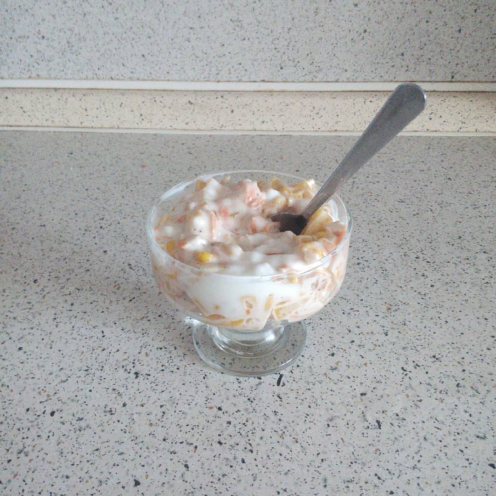

Kurací šalát s broskyňami podľa @zivot_po_60tke — Normy Jedál
Kurací šalát s broskyňami. Šalát: 1 kuracie, opečené a ochutené korením prsia pokrájané na kocky, 1/2 malej cibuľky, 150g kukurice, 1 uvarená nastrúhaná mrkva, 1,5 zavarených pokrájaných broskýň. Dresing: 1grécky jogurt, 1 ČL horčice, 1ČL kečupu,trochu cukru, soli a citrónovej šťavy. Všetky zložky zmiešame.
.
.
.
#kuracisalatsbroskynami #kuracieprsia #receptyzkurata #obed #zdravyobed #dnesvarim #dnesjem #fitpo60 #zdravavecera #hlavnejedlo #jedlobezmuky #rychlyobed